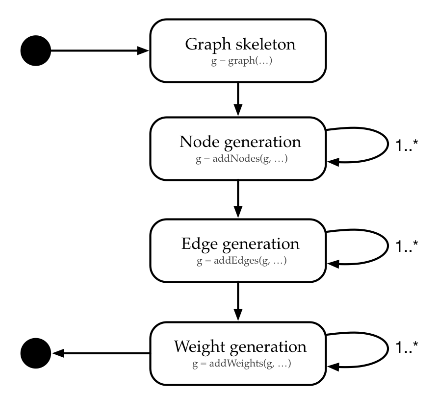

vignettes/introduction.Rmd
introduction.RmdBenchmarking algorithms for (combinatorial) optimization problems is usually carried out by running the set of algorithms on a set of test problems. Often, due to a lack of real-world data, the test set consists of artificially generated benchmark problems. Artificial problems allow for 1) the generation of arbitrary many instances in short time and 2) the generation of problems of different hardness levels by implementing theoretical knowledge.
The grapherator package implements a modular graph generation approach inspired by the MOST project (Cardoso, Jesus, and Márquez 2006, @CJM05). An (extensible) set of node, edge and weight generators allows for fast and convenient graph generation following a three step approach.
Each of the steps may be repeated multiple times (e.g., first some nodes which serve as cluster centers are added before the clusters are filled with nodes in a subsequent step). Once a step is completed, none of the preceeding steps can be performed anymore. E.g., once some edges are added no more nodes may be added. The process is illustrated in the following diagram.

The following code supports the workflow diagram with a first example. Here we generate a complete graph with n = 20 nodes placed uniformly at random in the square [0, 10] x [0, 10]. Two weights are assigned to each edge (both weights are drawn from a U(5, 10)-distribution).
library(grapherator)
set.seed(1) # reproducability
g = graph(lower = 0, upper = 10)
g = addNodes(g, n = 20, generator = addNodesUniform)
g = addEdges(g, generator = addEdgesComplete)
g = addWeights(g, generator = addWeightsRandom, method = runif, min = 5, max = 10)
g = addWeights(g, generator = addWeightsRandom, method = runif, min = 5, max = 10)
print(g)
#> GRAPHERATOR GRAPH
#> #nodes : 20 (UNG)
#> #edges : 190 (CEG)
#> #weights per edge: 2 (RWG,RWG)
do.call(gridExtra::grid.arrange, c(plot(g), list(nrow = 1)))Example network.
For each step there exist several preimplemented generator functions which are passed as generator argument to addNodes, addEdges or addWeights, respectively. Next, we give an incomprehensive overview of some generators to get an impression of what grapherator is capable of.
Custom generators are possible. See the HowTo on custom generators for an example.
Here, 50 nodes are placed uniformly at random in the square [0, 100] x [0, 100]. Edges are based on a Delauney triangulation. Both weights are random. The first weight is sampled from a uniform distribution U(10, 20), the second one follows a Gaussian distribution N(10, 2).
library(grapherator)
set.seed(1) # reproducability
g = graph(lower = 0, upper = 100)
g = addNodes(g, n = 50, generator = addNodesUniform)
g = addEdges(g, generator = addEdgesDelauney)
g = addWeights(g, generator = addWeightsRandom, method = runif, min = 10, max = 20)
g = addWeights(g, generator = addWeightsRandom, method = rnorm, mean = 10, sd = 2)
print(g)
#> GRAPHERATOR GRAPH
#> #nodes : 50 (UNG)
#> #edges : 137 (DEG)
#> #weights per edge: 2 (RWG,RWG)
do.call(gridExtra::grid.arrange, c(plot(g), list(nrow = 1L)))Example network.
In the following example a clustered graph with 7 clusters is generated. Cluster centers are based on a min-max Latin-Hypercube-Sample (LHS). In a subsequent step, 29 further points are added to each cluster by samling from a uniform distribution U(0, 5) around the cluster center. Edges are based on Waxman’s model with parameters alpha = 0.3, beta = 0.1. Weights are correlated with negative correlation rho = -0.7.
library(grapherator)
set.seed(1) # reproducability
g = graph(lower = c(0, 50), upper = c(100, 100))
#g = addNodes(g, n = 7, generator = addNodesUniform)
g = addNodes(g, n = 7, generator = addNodesLHS)
g = addNodes(g, n = 29, by.centers = TRUE, generator = addNodesUniform, lower = c(0, 0), upper = c(10, 10))
g = addEdges(g, generator = addEdgesWaxman, alpha = 0.3, beta = 0.1)
g = addWeights(g, generator = addWeightsCorrelated, rho = 0.7)
print(g)
#> GRAPHERATOR GRAPH
#> #nodes : 210 (LHSNG,CLUNG)
#> #edges : 938 (WEG)
#> #clusters : 7
#> #weights per edge: 2 (0.70--CORWG)
do.call(gridExtra::grid.arrange, c(plot(g), list(nrow = 1L)))Example network.
The last example is a another clustered network. Here, 5 cluster centers are placed manually by providing the center coordinates. Next, each cluster is crowded with 10 nodes by sampling node coordinates from a N(1, 0.2)-distribution each. Edges are added in two steps: first we add edges for each cluster seperately at random. In addition – to ensure connectivity – we add edges with the spanning tree edge generator. Next, the cluster centers are linked with another generator. The first weight is the Manhattan distance between the nodes in the plane. The second follows an exponential distribution with rate = 0.1.
library(grapherator)
set.seed(1) # reproducability
g = graph(lower = 0, upper = 100)
g = addNodes(g, n = 5, coordinates = matrix(c(10, 10, 20, 20, 30, 30, 10, 20, 40, 10), byrow = 2, ncol = 2))
g = addNodes(g, n = 10, by.centers = TRUE, generator = addNodesNormal, x.mean = 5, y.mean = 5, x.sd = 2, y.sd = 2, lower = c(0, 0), upper = c(10, 10))
g = addEdges(g, generator = addEdgesGilbert, p = 0.2, type = "intracluster")
g = addEdges(g, generator = addEdgesSpanningTree, type = "intracluster")
g = addEdges(g, generator = addEdgesDelauney, type = "intercenter")
g = addWeights(g, generator = addWeightsDistance, method = "manhattan")
g = addWeights(g, generator = addWeightsRandom, method = rexp, rate = 0.1)
print(g)
#> GRAPHERATOR GRAPH
#> #nodes : 55 (MANNG,CLNNG)
#> #edges : 116 (CLGilEG,CLSTEG,DEG)
#> #clusters : 5
#> #weights per edge: 2 (DWG,RWG)
do.call(gridExtra::grid.arrange, c(plot(g), list(nrow = 1L)))Example network.
Cardoso, Pedro, Mário Jesus, and Alberto Márquez. 2006. “MOST – Multiple Objective Spanning Trees Repository Project.” Technical Report. University of Algarve.
———. 2008. “MONACO Applied to the Multiple Criteria Minimum Spanning Trees Problem.” Technical Report. University of Algarve.
Erdös, P., and A. Rényi. 1959. “On random graphs, I.” Publicationes Mathematicae (Debrecen) 6: 290–97.
Knowles, J. D., and D. W. Corne. 2001. “Benchmark Problem Generators and Results for the Multiobjective Degree-Constrained Minimum Spanning Tree Problem.” In Proceedings of the 3rd Annual Conference on Genetic and Evolutionary Computation, 424–31. GECCO’01. San Francisco, CA, USA: Morgan Kaufmann Publishers Inc.
Waxman, B. M. 1988. “Routing of Multipoint Connections.” IEEE Journal on Selected Areas in Communications 6 (9): 1617–22. https://doi.org/10.1109/49.12889.